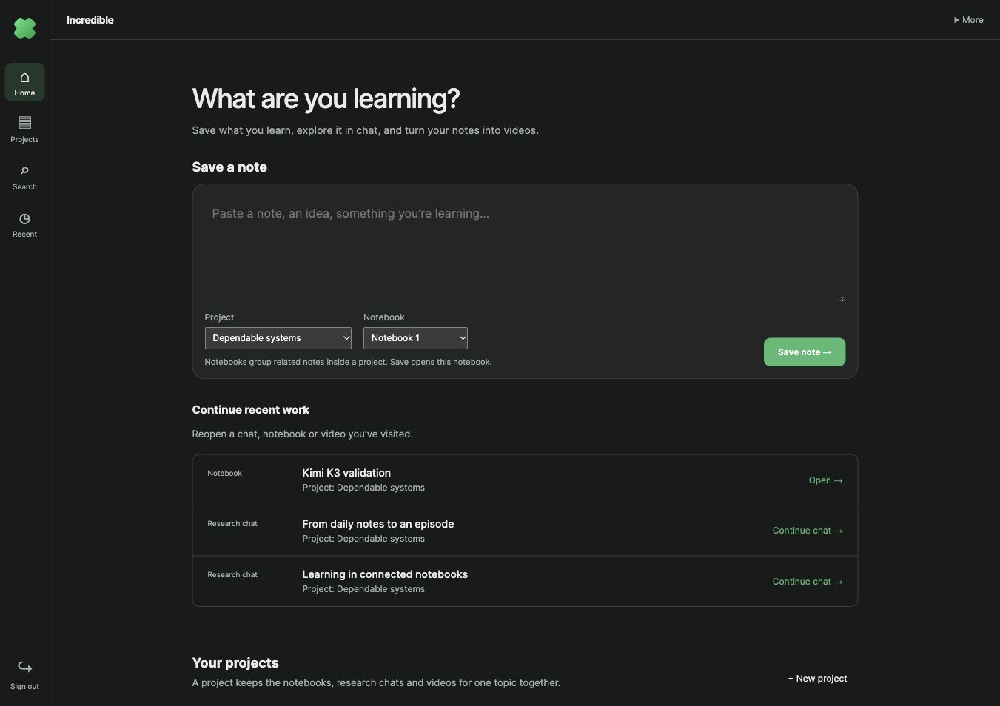
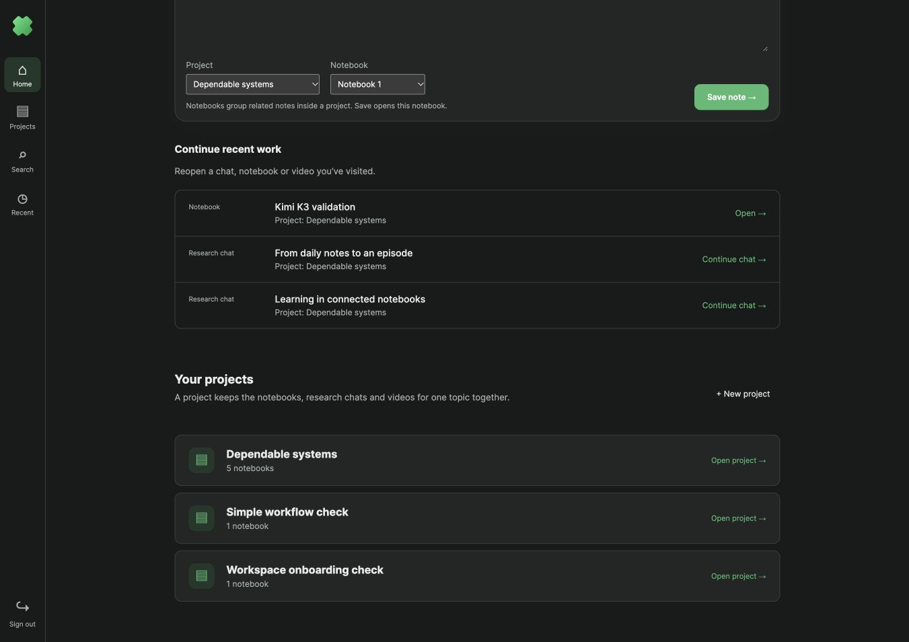
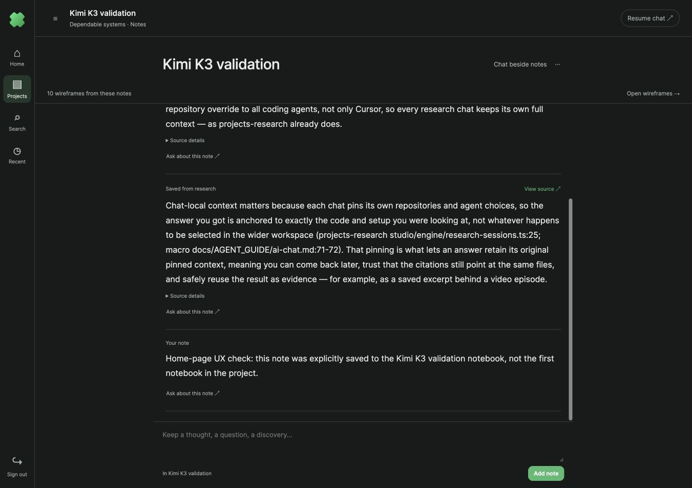
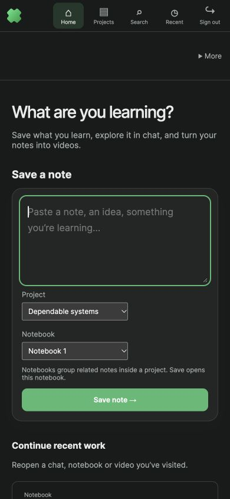

18 October 2026 · visible browser on parallel stack 4291.

Save a note has explicit Project and Notebook choices. Recent rows identify their resource type, project and action. Generic Create and unsaved New chat navigation entries are excluded.

Projects are explained as containers for a topic’s notebooks, research chats and videos. Compact rows replace oversized cards.

A clearly labeled test note saved to Kimi K3 validation, a non-default notebook. Saving opened the selected notebook. No AI generation was used for this check.

The same choices stack on mobile. The typed note survives project switching; notebook choices refresh and saving is disabled while they load.